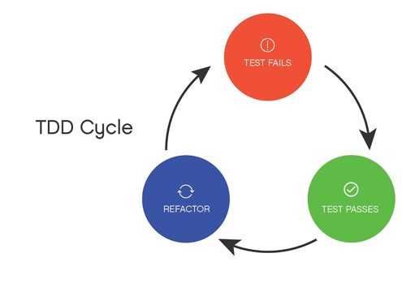

TDD
Introduccion
El desarrollo guiado por pruebas significa que escribes un test automático y luego de esto se escribe el
código para pasar dicho test para luego refactorizar el código, esto enfocado al mejoramiento de la
legibilidad y eliminación de duplicaciones.
Pilares
TDD es una técnica para el desarrollo de software que se centra en 3 pilares fundamentales.
- Implementación de las funciones que el cliente necesita y no más.
- Minimizar los defectos que llegan al software en fase de producción.
- Producción de software modular, reutilizable y preparado para cambios.
TDD es la respuesta a las grandes preguntas de:
- ¿Cómo lo hago?
- ¿Por dónde empiezo?
- ¿Cómo sé qué es lo que hay que implementar y lo que no?
- ¿Cómo escribir un código que se pueda modificar sin romper funcionalidad existente?
Ventajas
- La calidad del software aumenta
- Código altamente reutilizable
- Permite confiar en nuestros compañeros no importando la experiencia.
- Escribir el test antes del código nos obliga a escribir el mínimo de funcionalidad evitando
sobre
diseñar.
- Los test son la mejor documentación técnica a consultar.
Algoritmo
- Escribir la especificación del requisito (test): Una vez claro el requisito lo expresamos en
código.
- Implementar el código según lo dicho en el test: Teniendo el test escrito, codificamos lo mínimo
necesario para cumplirlo.
- Refactorizar para hacer mejoras y eliminar la duplicidad: Modificar el diseño cuidando de no
alterar su comportamiento.
